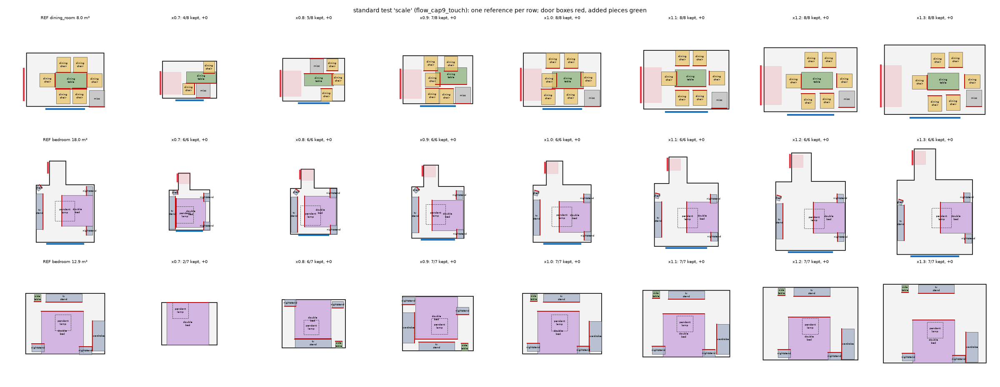
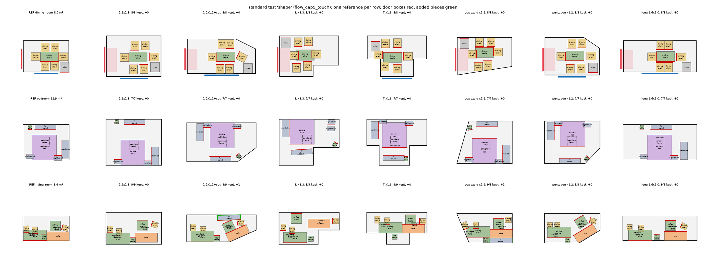

IntentFlow v0.3: carrying a home's arrangement into another room
1. Problem
I see a home whose arrangement I like, and I want the same arrangement, with furniture of the same style, in my own home. My room has another size, another outline, doors and windows elsewhere. The system gets the reference home A (its furniture and layout) and my empty room B, and returns a layout in B that keeps how A is arranged: what stands against which wall, what faces what, which pieces belong together. Where B is smaller it drops what a designer would drop; where it is larger it may add what a designer would add. The furniture's look can stay or move towards another style, smoothly, without touching the arrangement.
2. Overview
The model is the flow transformer. It learns mainly from real pairs: two designers' rooms with similar furniture (3D-FRONT [3]), so it sees how a real arrangement changes when the room changes — different relations, pieces dropped, pieces added. A teacher (rules plus a relation energy, solved under the hard constraints) produces extra answers only for the room shapes and sizes the real pairs rarely cover; it is augmentation, not the method. What to keep and what matters comes from a learned design-intent graph; nothing is decided by category names.
3. The design-intent graph is learned
Nodes are every piece of furniture, wall segment, door and window of A, each an oriented box. Every node pair gets the same generic descriptor \(\phi_{uv}\) (offset of v in u's frame, relative yaw, footprint gap, distance); no relation type, threshold or hierarchy is written by hand. A graph transformer \(g_\eta\) outputs
- an edge head \(\hat w_{uv}\in[0,1]\): how much of the relation u→v a second designer keeps. Target, from real pairs only: \(y_{uv} = 1 - D(\phi^A_{uv}, \phi^B_{uv})\) for matched pieces; for walls, doors and windows the nearest node of that kind in each room stands in;
- a node head \(\kappa_i(\rho)\): the probability that a designer keeps piece i in a room of area ratio \(\rho\) (kept = matched in B; dropped = unmatched while B has that furniture family).
Beds, sofas, dining tables and TV stands come out with \(\kappa\approx 1\) — the "anchors" that v0.2 listed by name are now learned — while pendant lamps, side tables and extra chairs get lower values that fall as the room shrinks. Validation on held-out real pairs (Spearman of \(\hat w\) against the measured preservation, and AUC of \(\kappa\)):
| DIG training data | all | furniture | wall | door | window | keep AUC | keep AUC, smaller rooms |
|---|---|---|---|---|---|---|---|
| category-pair mean (baseline) | 0.355 | 0.369 | 0.304 | 0.079 | 0.197 | — | — |
| real pairs, all (40k) | 0.432 | 0.438 | 0.444 | 0.139 | 0.295 | 0.902 | 0.889 |
| real pairs, 10k | 0.412 | 0.419 | 0.421 | 0.104 | 0.270 | 0.851 | 0.844 |
| + 10k augmented pairs as designer targets | 0.283 | 0.293 | 0.309 | 0.083 | 0.202 | 0.882 | 0.873 |
| + 10k augmented pairs, auxiliary head | 0.413 | 0.420 | 0.417 | 0.110 | 0.239 | 0.877 | 0.867 |
| + 10k augmented views (final) | 0.421 | 0.427 | 0.440 | 0.129 | 0.263 | 0.879 | 0.869 |
| + 5k views + 5k auxiliary pairs | 0.410 | 0.415 | 0.428 | 0.124 | 0.248 | 0.875 | 0.867 |
Using the rule-made augmented pairs as targets hurts (their relations follow the augmentation's rules, not designers). Using them as views — the real pair seen from a scaled or reshaped version of A, the target still designer B's — gives the best graph: the encoder sees rooms of every shape and size under designer supervision.
4. Structure from the graph
- What to drop: the floor piece with the least expected relation mass, \(\kappa_i(\rho)\sum_j(\hat w_{ij}+\hat w_{ji})\), recomputed after every removal, until the reference's density fits B. To make B usable a piece may go only if a designer is more likely to drop it than to keep it (\(\kappa_i<\tfrac12\), the decision boundary, not a tuned threshold).
- What to add: \(p_\psi(c, n\mid \text{layout}, B)\), trained on what designers placed beyond the reference in real partner rooms.
- Dependencies: a free-standing piece whose strongest learned tie goes to a piece designers keep more often (a chair and its table) keeps that piece's direction and is placed through it.
- Candidates are ordered lexicographically: feasible, then usable (no less walkable than A where B is smaller), then fewest departures (smaller assets, turns), then relation loss.
5. Training data
5.1 Real pairs (main signal)
6828 pairs from 2636 training rooms: A's matched pieces at the poses B's designer chose, plus everything B added (in 87% of the pairs, 2.82 pieces on average). The median relation distance between A and B is 0.35: real designers change relations. v0.2's known pairs kept only pairs with \(D\le 0.15\) (7% of these) and dropped every added piece; the student now trains on all of them, as two kinds of items — the matched pieces carried from A into B, and the added pieces placed around B's matched pieces.
5.2 Teacher pairs (augmentation)
For 220 rooms, target rooms of other outlines and sizes (L, T, trapezoid, pentagon; 0.6–1.25×; 1.3–1.7×) get answers from the full inference path with the energy placer and the teacher's rules: L 212, pentagon 214, T 209, trapezoid 210, size 214, delete 126, big 215. The energy keeps A's relations, each weighted by the learned graph:
\[E=\sum_i\Big[\frac{\sum_j \hat w_{ij}\, d(\phi^A_{ij},\phi_{ij})}{\sum_j \hat w_{ij}} + (1-\delta_i)\sum_{k\in\{\text{wall},\text{door},\text{window}\}}\hat w_{ik}\, d(\phi^A_{ik},\phi_{ik})\Big]\]minimised under Π_θ's constraints by an augmented Lagrangian [4], orientations fixed by the orientation set. \(\delta_i=1\) for a piece placed through its host. The teacher adds rules freely (it only makes ground truth): the side a piece stands against a wall in A (a bed's head, a sofa's back) stands against a wall in B.

6. The student: a flow transformer
A rectified flow [5] over the pieces' poses, a transformer [6] over furniture, wall and opening tokens with geometric attention biases. It starts from A carried into B and is conditioned on A only: A's pairwise relations (each piece receives the poses its partners' reference relations vote for), and each reference piece's ties to its nearest wall, door and window (offset, relative yaw, gap, learned weight) with what is left to undo in B. Heads: velocity, wall contact, wall-parallel. Π_θ then removes overlaps, keeps pieces inside and doors clear, and holds the wall contacts the model predicts. At inference it needs one selection, one flow sample (50 Euler steps) and one projection; the teacher's search, energy solves and rules are not run.
7. Style token
Style is the furniture's appearance. Each 3D-FUTURE [7] asset has a style vector z learned from its annotation, CLIP [8] image features and co-occurrence. A style token with a change degree λ∈[0,1] swaps the share λ of the reference's pieces (identical pieces as one group) for same-category assets closer to the target style within the size tolerance; the arrangement is not touched (standard test: relation distance 0.032 for the student across three styles and five degrees). At λ = 0 about 8% of the pieces still change: these are size swaps in one room where the furniture does not fit, not style swaps.
8. Results so far
8.1 Standard tests
Ten validation rooms per test: scale 0.7–1.3; other outlines no smaller than the reference (1.2×1.3, 1.5×1.1 with a cut corner, L and T ×1.3, trapezoid and pentagon ×1.2, long 1.6×1.0); three styles × five change degrees. D is the relation distance to the reference over kept pieces; "wall kept" the share of the reference's wall contacts (same side) that survive.
| method | scale: D | shape: D | wall kept | out of room (max) | collision (max) | style: D | time, 290 targets |
|---|---|---|---|---|---|---|---|
| teacher (energy + rules, GT generator) | 0.055 | 0.057 | 0.85 | 0.00 | 0.00 | — | 174 s (no style test) |
| energy, no teacher rules | 0.065 | 0.052 | 0.77 | 0.00 | 0.01 | 0.025 | 186 s |
| student: flow (cap9) | 0.072 | 0.057 | 0.70 | 0.00 | 0.00 | 0.032 | 105 s |
| student: flow + model wall contacts | 0.068 | 0.059 | 0.72 | 0.00 | 0.00 | 0.032 | 143 s |


8.2 Held-out real pairs
The system gets a validation room A and the empty room of a real partner B and is compared with what B's designer did: which of A's pieces were kept (keep F1), what was added (add F1), and how close the arrangement is to B's and to A's.
| model | pairs | keep F1 | add F1 | D to designer B | D to reference A | out of room | collision |
|---|---|---|---|---|---|---|---|
| student cap9, additions refused (old infill rule) | 120 | 0.851 | 0.138 | 0.337 | 0.083 | 0.007 | 0.074 |
9. What changed since v0.2
| part | v0.2 | now |
|---|---|---|
| condition of the flow | relation tensor R from a hand relation graph, taken from the answer in training | the reference only: its pairwise relations (votes) and each piece's ties to walls, doors and windows with learned weights |
| design intent | hand relation graph, later WNet | learned DIG over furniture, walls, doors, windows (edge head + keep-probability head) |
| which pieces survive | area budget, anchor list by name, a table's chairs follow it | learned keep probability × relation mass; extra drops only below κ = ½; no category names |
| real training pairs | known pairs filtered to D ≤ 0.25 / 0.15, added pieces unsupervised | all partner pairs, with what the designer added and dropped |
| synthetic answers | rule layouts (groups moved together) | teacher (rules + relation energy under the constraints), used as augmentation only |
| orientation in Π_θ | locked to the nearest wall | orientation set: nearest wall, or the direction of the learned host; the model's wall contacts held |
| style | none ("swap R, change the arrangement") | appearance vector z, style token with a change degree; arrangement untouched |
| dropped | regularity snap, manifold guidance, hierarchical parent-relative code, the relation-swap and R-robustness tables, the pooled style code | |
10. Evidence so far, and what is missing
- The graph is learned and informative: above the category-pair baseline on every edge kind (§3). Missing: room-clustered bootstrap intervals; a category keep-rate baseline for κ; downstream difference of learned vs uniform weights.
- The student matches the teacher at less compute: not yet — it trails the teacher on relation distance and wall contacts (§8.1), and loses a door relation in enlarged rooms (one relation in ten rooms). cap10 retrains on the new data.
- It learns from real designers what to drop and add: keep F1 is measured (§8.2); additions were refused by an old rule and are being re-measured.
- Hard constraints last: after Π_θ, out-of-room, collisions and blocked doors are near zero; the ablation with the constraints as training losses is missing.
- Structure search: ablations (learned vs random vs footprint-only drop order; with and without each step) missing.
- Style: arrangement unchanged by construction; an appearance-consistency measure (CLIP or people) and random-swap controls are missing.
- Baselines: PhyScene and LEGO-Net not yet run in this pipeline. Tests use ten rooms per cell and one seed.
11. Open items
- Student trained with real pairs as the main signal (cap10): compare with the teacher on held-out real pairs.
- Where the student still trails the teacher: wall contacts in enlarged rooms, whole arrangements turned in some outlines.
- Scale up (all training rooms), then PhyScene and LEGO-Net under the same tests.
References
- Y. Yang et al. PhyScene: Physically Interactable 3D Scene Synthesis for Embodied AI. CVPR 2024.
- Q. A. Wei et al. LEGO-Net: Learning Regular Rearrangements of Objects in Rooms. CVPR 2023.
- H. Fu et al. 3D-FRONT: 3D Furnished Rooms with layOuts and semaNTics. ICCV 2021.
- J. Nocedal, S. J. Wright. Numerical Optimization, ch. 17 (augmented Lagrangian). Springer 2006.
- X. Liu, C. Gong, Q. Liu. Flow Straight and Fast: Learning to Generate and Transfer Data with Rectified Flow. ICLR 2023.
- W. Peebles, S. Xie. Scalable Diffusion Models with Transformers. ICCV 2023.
- H. Fu et al. 3D-FUTURE: 3D Furniture Shape with TextURE. IJCV 2021.
- A. Radford et al. Learning Transferable Visual Models From Natural Language Supervision. ICML 2021.